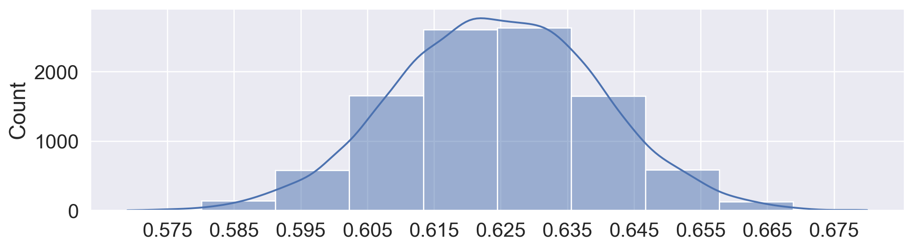

Code
import matplotlib.pyplot as plt
import numpy as np
import pandas as pd
import seaborn as sns
import zipfile
sns.set_theme(style='darkgrid', font_scale = 1.5,
rc={'figure.figsize':(7,5)})In data science, understanding characteristics of a population starts with having quality data to investigate. While it is often impossible to collect all the data describing a population, we can overcome this by properly sampling from the population. In this note, we will discuss appropriate techniques for sampling from populations.
In general: a census is “a complete count or survey of a population, typically recording various details of individuals.” An example is the U.S. Decennial Census which was held in April 2020. It counts every person living in all 50 states, DC, and US territories, not just citizens. Participation is required by law (it is mandated by the U.S. Constitution). Important uses include the allocation of Federal funds, congressional representation, and drawing congressional and state legislative districts. The census is composed of a survey mailed to different housing addresses in the United States.
A survey is a set of questions. An example is workers sampling individuals and households. What is asked and how it is asked can affect how the respondent answers or even whether or not they answer in the first place.
While censuses are great, it is often very difficult and expensive to survey everyone in a population. Imagine the amount of resources, money, time, and energy the U.S. spent on the 2020 Census. While this does give us more accurate information about the population, it’s often infeasible to execute. Thus, we usually survey a subset of the population instead.
A sample is (usually) a subset of the population that is often used to make inferences about the population. If our sample is a good representation of our population, then we can use it to glean useful information at a lower cost. That being said, how the sample is drawn will affect the reliability of such inferences. Two common sources of error in sampling are chance error, where random samples can vary from what is expected in any direction, and bias, which is a systematic error in one direction. Biases can be the result of many things, for example, our sampling scheme or survey methods.
Let’s define some useful vocabulary:
While ideally, these three sets would be exactly the same, they usually aren’t in practice. For example, there may be individuals in your sampling frame (and hence, your sample) that are not in your population. And generally, sample sizes are much smaller than population sizes.

The following case study is adapted from Statistics by Freedman, Pisani, and Purves, W.W. Norton NY, 1978.
In 1936, President Franklin D. Roosevelt (Democratic) went up for re-election against Alf Landon (Republican). As is usual, polls were conducted in the months leading up to the election to try and predict the outcome. The Literary Digest was a magazine that had successfully predicted the outcome of 5 general elections coming into 1936. In their polling for the 1936 election, they sent out their survey to 10 million individuals whom they found from phone books, lists of magazine subscribers, and lists of country club members. Of the roughly 2.4 million people who filled out the survey, only 43% reported they would vote for Roosevelt; thus, the Digest predicted that Landon would win.
On election day, Roosevelt won in a landslide, winning 61% of the popular vote of about 45 million voters. How could the Digest have been so wrong with their polling?
It turns out that the Literary Digest sample was not representative of the population. Their sampling frame of people found in phone books, lists of magazine subscribers, and lists of country club members were more affluent and tended to vote Republican. As such, their sampling frame was inherently skewed in Landon’s favor. The Literary Digest completely overlooked the lion’s share of voters who were still suffering through the Great Depression. Furthermore, they had a dismal response rate (about 24%); who knows how the other non-respondents would have polled? The Digest folded just 18 months after this disaster.
At the same time, George Gallup, a rising statistician, also made predictions about the 1936 elections. Despite having a smaller sample size of “only” 50,000 (this is still more than necessary; more on this when we cover the Central Limit Theorem), his estimate that 56% of voters would choose Roosevelt was much closer to the actual result (61%). Gallup also predicted the Digest’s prediction within 1% with a sample size of only 3000 people by anticipating the Digest’s affluent sampling frame and subsampling those individuals.
So what’s the moral of the story? Samples, while convenient, are subject to chance error and bias. Election polling, in particular, can involve many sources of bias. To name a few:
When sampling, it is essential to focus on the quality of the sample rather than the quantity of the sample. A huge sample size does not fix a bad sampling method. Our main goal is to gather a sample that is representative of the population it came from. In this section, we’ll explore the different types of sampling and their pros and cons.
A convenience sample is whatever you can get ahold of; this type of sampling is non-random. Note that haphazard sampling is not necessarily random sampling; there are many potential sources of bias.
In a probability sample, we provide the chance that any specified set of individuals will be in the sample (individuals in the population can have different chances of being selected; they don’t all have to be uniform), and we sample at random based off this known chance. For this reason, probability samples are also called random samples. The randomness provides a few benefits:
The real world is usually more complicated, and we often don’t know the initial probabilities. For example, we do not generally know the probability that a given bacterium is in a microbiome sample or whether people will answer when Gallup calls landlines. That being said, still we try to model probability sampling to the best of our ability even when the sampling or measurement process is not fully under our control.
A few common random sampling schemes:
Suppose we have 3 TA’s (Arman, Boyu, Charlie): I decide to sample 2 of them as follows:
We can list all the possible outcomes and their respective probabilities in a table:
| Outcome | Probability |
|---|---|
| {A, B} | 0.5 |
| {A, C} | 0.5 |
| {B, C} | 0 |
This is a probability sample (though not a great one). Of the 3 people in my population, I know the chance of getting each subset. Suppose I’m measuring the average distance TAs live from campus.
Consider the following sampling scheme:
Yes. For a sample [n, n + 10, n + 20, …, n + 1190], where 1 <= n <= 10, the probability of that sample is 1/10. Otherwise, the probability is 0.
Only 10 possible samples!Suppose you want to interview a representative sample of 12 students enrolled in Data 100.
Yes. Each student is chosen with probability 1/100
Yes, a benefit! We have guaranteed proportional representation of undergrads and grad students. In other words, we have reduced chance error (i.e., variance).
Often times, for whatever reason, we cannot obtain a truly representative sample. This often happens in industry.
We might notice that although the amount of grads and undergrads in the room is equal, across the whole class there are a lot more undergrads than grad students. We might then want to overweight the opinions of the 10 undergrads relative to the 10 grad students.
However, in order to trust this estimate, we have made a pretty huge assumption! This assumes that the 10 grad students are representative of all 100 grad students, and the 10 undergrads are representative of all 1100 undergrads.
(9 / 10) * (100 / 1200) + (5 / 10) * (1100 / 1200) = 53.3%
This is an example of post-stratification. After we took a non-representative sample (the students in professor OH) of the population we’re interested in (all students in this class), we used knowledge about the population to reweight responses.
Let’s start with the real election results from the 1936 election.
votes represents a single voter.voted_dem is 0/1 variable indicating whether the voter voted for Franklin D. Roosevelt, who was the Democratic candidate in 1936. If 0, the voter voted for Alf Landon, the Republican candidate.Votes for other parties are excluded from this dataset.
import matplotlib.pyplot as plt
import numpy as np
import pandas as pd
import seaborn as sns
import zipfile
sns.set_theme(style='darkgrid', font_scale = 1.5,
rc={'figure.figsize':(7,5)})with zipfile.ZipFile("data/1936_votes.zip", 'r') as z:
with z.open("1936_votes.csv") as csv_file:
votes = pd.read_csv(csv_file)
votes.head()| voted_dem | |
|---|---|
| 0 | 1 |
| 1 | 1 |
| 2 | 0 |
| 3 | 1 |
| 4 | 1 |
How many votes were cast for either Roosevelt or Landon in 1936?
len(votes)44430549What fraction of voters voted for Roosevelt, the Democratic candidate?
votes['voted_dem'].sum() / len(votes)0.6245897614274358But wait, don’t the slides say that Roosevelt won 61% of the vote?
Yes! But, he won 61% of all votes. If we filter to just the voters who voted for Roosevelt or Landon, Roosevelt won 62.5% of votes.
Useful tip: The mean of a 0/1 column is the same as the proportion of values that are 1.
votes['voted_dem'].mean()0.6245897614274358Of the 44,430,549 voters who voted for either Roosevelt or Landon, 62.5% voted for Roosevelt.
Note: An SRS is sometimes called a “names in a hat” sample, since it’s a lot like putting each observation on a slip of paper, putting all the slips in a big hat, and then randomly drawing slips one at a time.
If we were to take a simple random sample of just 1,000 voters and calculate the proportion who planned to vote for Roosevelt, how close would we be to 62.5%?
votes['voted_dem'].sample(1000).mean()0.632Note that the cell above is a little slow, since we’re sampling from a DataFrame with almost 45 million rows.
We can speed up the sampling using NumPy:
# Construct a random number generator object.
# No need to be familiar with using NumPy this way in Data 100!
rng = np.random.default_rng()
n_votes = len(votes)
# Generate 1000 random integers from 0 to (number of votes - 1)
idx = rng.integers(low=0, high=n_votes-1, size=1000)
votes['voted_dem'].iloc[idx].mean()0.61Both of the estimates above are pretty close to 62.5%! They are much closer than the estimate from the Literary Digest poll, which predicted that 43% of votes would go to Roosevelt.
This is no fluke! If we repeat this over and over, we tend to hover around 62.5%.
for _ in range(10):
idx = rng.integers(low=0, high=n_votes-1, size=1000)
print(votes['voted_dem'].iloc[idx].mean())0.634
0.606
0.644
0.635
0.635
0.637
0.612
0.612
0.625
0.609Let’s randomly generate 10,000 estimates:
nrep = 10000 # number of simulations
n = 1000 # size of our sample
results = [] # list to store the sampling results
for i in range(0, nrep):
idx = rng.integers(low=0, high=n_votes, size=1000)
results.append(votes['voted_dem'].iloc[idx].mean())
# First 10 simulated sample proportions
results[:10][0.601, 0.638, 0.615, 0.597, 0.609, 0.634, 0.641, 0.629, 0.571, 0.651]Plotting our estimates with KDE:
plt.figure(figsize=(12, 3))
p = sns.histplot(x=results, kde=True, bins=10)
# Make x-axis centered at 0.625 with 0.01 intervals
p.set_xticks(np.arange(0.625 - 5 * 0.01, 0.625 + 5 * 0.01, 0.01));
We get an approximate normal distribution centered around 62.5%, with most of the mass of the distribution (say, 95% of the mass) within about 3 percentage points (0.03) on each side.
As it turns out, with a sample size of 1000, our estimate of the proportion of voters supporting Roosevelt has a margin of error of about 3 percentage points (3pp) at a 95% confidence level (CL), so long as we take a simple random sample (SRS) of actual voters.
We’ll learn what these values mean and how to calculate them when we (re)learn the Central Limit Theorem later in the semester.
The poll DataFrame contains a summary of the 1936 Literary Digest Poll, along with polling results and actual election results from 1932 and 1936.
poll represents a U.S. state.state: name of the U.S. state.electoral_votes: # electoral votes allocated to the given state.actual_dem_1936: # votes for Roosevelt (the Democratic candidate) in 1936.actual_rep_1936: # votes for Landon (the Republican candidate) in 1936.ld_dem_1936: # Literary Digest respondents who planned to vote for Roosevelt in 1936.ld_rep_1936: # Literary Digest respondents who plannted to vote for Landon in 1936.Literary Digest also had a 1932 poll! We will use this data for post-stratification: * actual_dem_1932: # votes for the Democratic candidate in 1932. * actual_rep_1932: # votes for the Republican candidate in 1932. * ld_dem_1932: # of 1936 Literary Digest respondents who voted for the Democratic candidate in 1932. * ld_rep_1932: # of 1936 Literary Digest respondents who voted for Republican candidate in 1932.
Note: Votes from parties other than Democratic and Republican are excluded from this dataset.
poll = pd.read_csv('data/literary-digest-summary-data.csv')
poll.head()| state | electoral_votes | actual_dem_1936 | actual_rep_1936 | ld_rep_1936 | ld_dem_1936 | actual_dem_1932 | actual_rep_1932 | ld_dem_1932 | ld_rep_1932 | |
|---|---|---|---|---|---|---|---|---|---|---|
| 0 | Alabama | 11 | 238196 | 35358 | 3060 | 10082 | 207910 | 34675 | 9828 | 1589 |
| 1 | Arizona | 3 | 86722 | 33433 | 2337 | 1975 | 79264 | 36104 | 2202 | 1679 |
| 2 | Arkansas | 9 | 146765 | 32049 | 2724 | 7608 | 189602 | 28467 | 7608 | 1566 |
| 3 | California | 22 | 1766836 | 836431 | 89516 | 77245 | 1324157 | 847902 | 69720 | 80525 |
| 4 | Colorado | 6 | 295021 | 181267 | 15949 | 10025 | 250877 | 189617 | 9970 | 13619 |
As a sanity check, let’s make sure we have the same number of votes as the first dataset (44,430,549):
poll['actual_dem_1936'].sum() + poll['actual_rep_1936'].sum()44430549Let’s also check that we get the reported Literary Digest prediction of 43% for Roosevelt.
poll['ld_dem_1936'].sum() / (poll['ld_dem_1936'].sum() + poll['ld_rep_1936'].sum())0.4289439704056572Using post-stratification, let’s see if we can improve the Literary Digest poll result using the same information available to Literary Digest in 1936.
Recall the steps of post-stratification:
Sample: Responses to the Literary Digest poll from 1932, among 1936 poll respondents
Population: The actual election outcomes in 1932
Cells: Every combination of state and political party
Wait, aren’t we interested in the 1936 Literary Digest poll?
Yes! But, we can use responses from the older 1932 poll and 1932 election results to get our sample cell weights, and then use these weights to turn the 1936 poll results into a prediction of the 1936 election results.
Note that this approach assumes that over- and under-representation of voters among the poll respondents in state and party is the same in 1932 and 1936!
Let’s start with step 1. We divide our population and sample into cells defined by each combination of state and choice of party in 1932:
Note: Alaska and Hawaii were not U.S. states until after 1936.
The population cells are already in polls: actual_dem_1932 and actual_rep_1932 provide the actual vote counts for each party and state in 1932.
The sample cells are also in polls: ld_dem_1932 and ld_rep_1932 provide the number of responses to the 1932 Literary Digest poll, among 1936 poll respondents, for each party.
Let’s make the big assumption that respondents in ld_dem_1932 are representative of all voters in actual_dem_1932 for each state, and the same for ld_rep_1932 and actual_rep_1932.
In other words, we claim that response rates and outreach for Democrats and Republicans from each state in 1932 can differ, but ultimately poll respondents from a particular party+state combination are representative of actual voters for each party+state combination.
Then, we can calculate the reweighting factor, or how over- or under-represented poll respondents are relative to actual voters.
All we need to do is divide the actual vote counts by the corresponding number of respondents, for each combination of party and state.
poll['dem_reweight_factor'] = poll['actual_dem_1932'] / poll['ld_dem_1932']
poll['rep_reweight_factor'] = poll['actual_rep_1932'] / poll['ld_rep_1932']
poll.tail()| state | electoral_votes | actual_dem_1936 | actual_rep_1936 | ld_rep_1936 | ld_dem_1936 | actual_dem_1932 | actual_rep_1932 | ld_dem_1932 | ld_rep_1932 | dem_reweight_factor | rep_reweight_factor | |
|---|---|---|---|---|---|---|---|---|---|---|---|---|
| 43 | Virginia | 11 | 234980 | 98336 | 10223 | 16783 | 203979 | 89637 | 16194 | 6817 | 12.595961 | 13.149039 |
| 44 | Washington | 8 | 459579 | 206892 | 21370 | 15300 | 353260 | 208645 | 16223 | 17122 | 21.775257 | 12.185784 |
| 45 | West Virginia | 8 | 502582 | 325358 | 13660 | 10235 | 405124 | 330731 | 10818 | 11338 | 37.449066 | 29.170136 |
| 46 | Wisconsin | 12 | 802984 | 380828 | 33796 | 20781 | 707410 | 347741 | 24073 | 25731 | 29.386034 | 13.514477 |
| 47 | Wyoming | 3 | 62624 | 38739 | 2526 | 1533 | 54370 | 39583 | 1654 | 2072 | 32.871826 | 19.103764 |
Note that dem_reweight_factor is about 36 for Arizona.
Similarly, rep_reweight_factor is about 21.5 for Arizona.
So, Democratic voters are underrepresented in the 1932 Literary Digest poll responses, relative to Republican voters.
Based on the Republican bias in the Literary Digest sample discussed in lecture (i.e., wealthier folks with phones, cars, and magazines), this is expected!
Next, we apply these same weights to inflate the 1936 poll results into vote predictions.
poll['pred_dem_1936'] = round(poll['ld_dem_1936'] * poll['dem_reweight_factor'])
poll['pred_rep_1936'] = round(poll['ld_rep_1936'] * poll['rep_reweight_factor'])
poll.head()| state | electoral_votes | actual_dem_1936 | actual_rep_1936 | ld_rep_1936 | ld_dem_1936 | actual_dem_1932 | actual_rep_1932 | ld_dem_1932 | ld_rep_1932 | dem_reweight_factor | rep_reweight_factor | pred_dem_1936 | pred_rep_1936 | |
|---|---|---|---|---|---|---|---|---|---|---|---|---|---|---|
| 0 | Alabama | 11 | 238196 | 35358 | 3060 | 10082 | 207910 | 34675 | 9828 | 1589 | 21.154864 | 21.821901 | 213283.0 | 66775.0 |
| 1 | Arizona | 3 | 86722 | 33433 | 2337 | 1975 | 79264 | 36104 | 2202 | 1679 | 35.996367 | 21.503276 | 71093.0 | 50253.0 |
| 2 | Arkansas | 9 | 146765 | 32049 | 2724 | 7608 | 189602 | 28467 | 7608 | 1566 | 24.921399 | 18.178161 | 189602.0 | 49517.0 |
| 3 | California | 22 | 1766836 | 836431 | 89516 | 77245 | 1324157 | 847902 | 69720 | 80525 | 18.992499 | 10.529674 | 1467076.0 | 942574.0 |
| 4 | Colorado | 6 | 295021 | 181267 | 15949 | 10025 | 250877 | 189617 | 9970 | 13619 | 25.163190 | 13.922975 | 252261.0 | 222058.0 |
Finally, let’s calculate the proportion of predicted votes that are allocated to Roosevelt in 1936.
poll['pred_dem_1936'].sum() / (poll['pred_dem_1936'].sum() + poll['pred_rep_1936'].sum())0.542225102237559254% is a majority! Using post-stratification, we have shifted the Literary Digest prediction of a Roosevelt loss with 43% of the vote to a (correct) Roosevelt win with 54%.
There is no cheating here; we used the same data available to Literary Digest in 1936.
Note that post-stratification is not perfect. We are still off by almost 10 percentage points. But, we’ve moved in the right direction.
As a follow-up exercise, we can compare the predicted 1936 vote totals to the actual 1932 vote totals.
Then, we could apply a correction factor to change the predicted number of 1936 votes to be in line with the total number of votes in 1932.
This exercise assumes that the total number of votes cast in 1932 would be the same in 1936, but the poll response rates and outreach might change between 1932 and 1936.
poll['pred_total_1936'] = poll['pred_dem_1936'] + poll['pred_rep_1936']
poll['actual_total_1932'] = poll['actual_dem_1932'] + poll['actual_rep_1932']
poll['correction_factor'] = poll['actual_total_1932'] / poll['pred_total_1936']
poll.head()| state | electoral_votes | actual_dem_1936 | actual_rep_1936 | ld_rep_1936 | ld_dem_1936 | actual_dem_1932 | actual_rep_1932 | ld_dem_1932 | ld_rep_1932 | dem_reweight_factor | rep_reweight_factor | pred_dem_1936 | pred_rep_1936 | pred_total_1936 | actual_total_1932 | correction_factor | |
|---|---|---|---|---|---|---|---|---|---|---|---|---|---|---|---|---|---|
| 0 | Alabama | 11 | 238196 | 35358 | 3060 | 10082 | 207910 | 34675 | 9828 | 1589 | 21.154864 | 21.821901 | 213283.0 | 66775.0 | 280058.0 | 242585 | 0.866196 |
| 1 | Arizona | 3 | 86722 | 33433 | 2337 | 1975 | 79264 | 36104 | 2202 | 1679 | 35.996367 | 21.503276 | 71093.0 | 50253.0 | 121346.0 | 115368 | 0.950736 |
| 2 | Arkansas | 9 | 146765 | 32049 | 2724 | 7608 | 189602 | 28467 | 7608 | 1566 | 24.921399 | 18.178161 | 189602.0 | 49517.0 | 239119.0 | 218069 | 0.911969 |
| 3 | California | 22 | 1766836 | 836431 | 89516 | 77245 | 1324157 | 847902 | 69720 | 80525 | 18.992499 | 10.529674 | 1467076.0 | 942574.0 | 2409650.0 | 2172059 | 0.901400 |
| 4 | Colorado | 6 | 295021 | 181267 | 15949 | 10025 | 250877 | 189617 | 9970 | 13619 | 25.163190 | 13.922975 | 252261.0 | 222058.0 | 474319.0 | 440494 | 0.928687 |
poll['pred_dem_1936_corrected'] = poll['pred_dem_1936'] * poll['correction_factor']
poll['pred_rep_1936_corrected'] = poll['pred_rep_1936'] * poll['correction_factor']
poll['pred_dem_1936_corrected'].sum() / (poll['pred_dem_1936_corrected'].sum() + poll['pred_rep_1936_corrected'].sum())0.5419440974611633Looks like a pretty similar prediction for Roosevelt of 54%.
As it turns out, it looks like our original (i.e., uncorrected) predictions had a vote total closer to the true 1936 vote total:
print('Actual 1936 vote total:')
print(poll['actual_dem_1936'].sum() + poll['actual_rep_1936'].sum())
print('Predicted 1936 vote total, uncorrected:')
print(poll['pred_dem_1936'].sum() + poll['pred_rep_1936'].sum())
print('Predicted 1936 vote total, corrected:')
print(poll['pred_dem_1936_corrected'].sum() + poll['pred_rep_1936_corrected'].sum())Actual 1936 vote total:
44430549
Predicted 1936 vote total, uncorrected:
42058418.0
Predicted 1936 vote total, corrected:
38582531.0Furthermore, we can check whether post-stratification would have led to a predicted win for Roosevelt in the electoral college, which is what actually determines the election outcome.
poll['dem_wins'] = poll['pred_dem_1936'] > poll['pred_rep_1936']
print('Total predicted Roosevelt electoral votes:')
print(( poll['dem_wins'] * poll['electoral_votes'] ).sum())
print('Total predicted Landon electoral votes:')
print(( (1-poll['dem_wins']) * poll['electoral_votes'] ).sum())Total predicted Roosevelt electoral votes:
380
Total predicted Landon electoral votes:
151We (correctly) predict a Roosevelt landslide in the electoral college!
But, note that the actual electoral college landslide was much bigger: 523 to 8
This is the largest electoral college landslide since 1820 (as of 2025).
Understanding the sampling process is what lets us go from describing the data to understanding the world. Without knowing / assuming something about how the data were collected, there is no connection between the sample and the population. Ultimately, the dataset doesn’t tell us about the world behind the data.